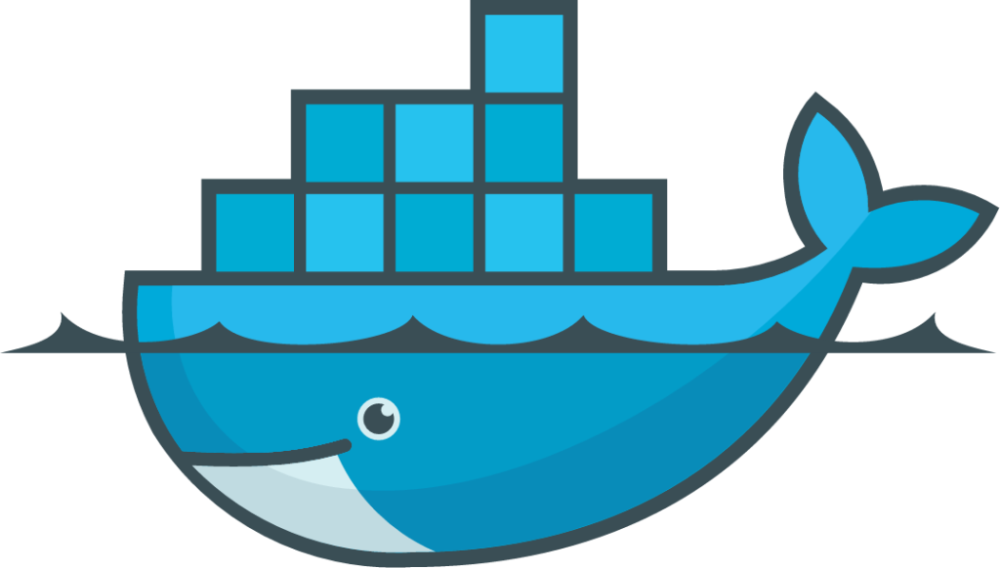

Tools Learned/Used:


- 
Vibelog is a journaling web application that allows users to track their reflections/experiences daily for the purpose of tracking their mental health.
Once journal writers create an account, they can then create a journal that reflects on how their day was.
They can then see their journals by clicking the read journal page, then they can see all of their journals.
If they write journals for a couple of days or weeks, they can then go to the ai/statistics page to view how they were doing on a weekly/monthly basis.
The journalist can then ask our AI assistant on stuff such as having inspiration for your next journal entry and an analysis on your journal entries on a custom timeframe.
The AI then provides advice on how to make your week or month better!!
The writer can also track goals through our calendar, which stores the journals that you have per day through calendar events.